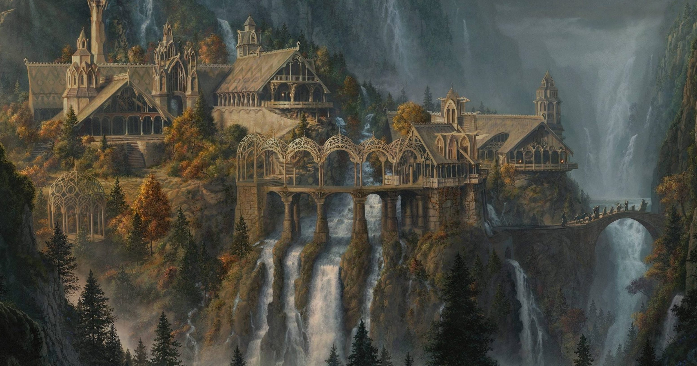

Карта средиземья

К карте
Все элементы
Ривенделл
Ривенделл (англ. Rivendell, в переводе — «прорубленная долина»; варианты перевода — Раздол, Дольн, Райвенделл, Разлог) — скрытое убежище Элронда, созданное им в Эриадоре в 1697 году В. Э. для защиты от Саурона. Это место находилось в глубокой долине у западного подножия Мглистых Гор и оставалось скрытым благодаря кольцу Элронда — Вилье (Vilya) — вплоть до окончания войны Кольца. После уничтожения Кольца Всевластья сила кольца Элронда иссякла, и он уплыл за Море, однако Ривенделл какое-то время оставался под властью его сыновей — Элладана и Элрохира. Кэлеборн увел лориэнских эльфов туда после своего ухода из Лотлориэна.

Ривенделл находится на севере Эрегиона (старое название — Холлин), на юг от плато Эттенблат (называемого также Троллистым из-за обитающих там троллей), к западу от Мглистых гор и к востоку от реки Гремучей.
Поросшие вереском плоскогорья скрывали его от посторонних глаз. Ривенделл стоял на краю узкого ущелья реки Бруинен (один из основных подходов к Ривенделлу поступает из соседнего брода реки). В долину вела крутая и извилистая тропа, отмеченная искусно спрятанными белыми камнями. Свернувшие с тропы путники рисковали попасть в ямы-ловушки, внешне неотличимые от обычных полян. Высоко на склонах росли ели, а ниже — буки и дубы. Два горных потока из тех, что сливались в реку Бруинен, текли на запад по долине. Узкий каменный мост соединял берега реки, и на северном берегу находился Последний Домашний Приют, где жил Элронд. Дом окружали обширные сады, террасы были огромными и главным образом обращены к реке. На востоке находится перевал через Мглистые горы, известный под названием Ступеней Димрилла.
За много лиг от Ривенделла нет никаких человеческих поселений. Ближайшее к нему поселение — Пригорье — находится на западе, на расстоянии около недели пути по Тракту.
Климат умеренно-континентальный и прохладный, с теплым летом, достаточно снежной — но не холодной — зимой и умеренным количеством осадков. Сезоны выражены сильнее, чем в районах, идущих далее на запад, таких как Шир, но менее экстремальны, чем места к востоку от Мглистых гор. Как и Хоббитон, Ривенделл расположен примерно на 52 градусах с. ш. — это ссылка Толкина на город Оксфорд, в котором он жил и работал[1].
Ривенделл прекрасно защищен от внешних врагов. Когда враги подступают к Имладрису, река Бруинен, по велению Элронда, разливается, и всё живое гибнет в её волнах. Кроме реки, Имладрис прикрывали отряды эльфов, доходивших до Эрегиона. В замке жили несколько эльфийских витязей, способных биться со всеми Девятью назгулами (например, Глорфиндел).
Элронд жил в Ривенделле с семьей — женой Келебриан, их сыновьями Элладаном и Элрохиром и дочерью Арвен Ундомиэль. Элронд также способствовал эльфийскому воспитанию молодого Арагорна, который жил с ними до совершеннолетия. Келебриан была схвачена орками, которые жестоко пытали её и ранили отравленным оружием. Сыновья спасли её, а Элронд исцелил, но радость не вернулась к ней, и вскоре она ушла из Средиземья в Чертоги Мандоса. Арвен некоторое время жила в Лотлориене с Галадриэль и Келеборном (своими бабкой и дедом по матери), но, вернувшись в Ривенделл, она в конце концов осталась там, чтобы стать женой Арагорна, после того как тот станет правителем Гондора.
В Ривенделле также обитали эльфийский князь Глорфиндель и остатки нолдор из дома Финрода, советник Элронда Эрестор, Линдир и многие другие эльфы. Очень часто в Ривенделле жили следопыты (Арагорн считал Имладрис лучшим местом на свете куда он по возможности возвращался) а их вожди традиционно воспитывались там. Много гостей бывало в Ривенделле, выискивая убежища, совета или знаний